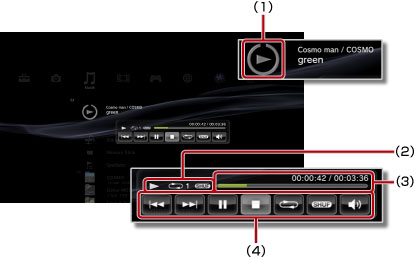

Musik > Använd kontrollpanelen i litet format
Använd kontrollpanelen i litet format
Använd kontrollpanelen i litet format för att utföra olika funktioner medan du spelar musik.
1. |
Tryck på PS-knappen medan du spelar musik. |
||||||||
|---|---|---|---|---|---|---|---|---|---|
2. |
Använd riktningsknapparna för att välja ikonen för musikinnehållet som spelas under 
|
Tips!
- Ikonen för musiken som spelas visas under ikonen
 (Musik).
(Musik). - Kontrollpanelen i litet format kan döljas genom att trycka på knappen
 medan musiken spelas.
medan musiken spelas.
Föregående

Gå tillbaka till början av det nuvarande eller föregående spåret.
Nästa
Gå till början av nästa spår.
Paus
Pausa uppspelningen.
Stopp
Stoppa uppspelningen och dölj kontrollpanelen i litet format.
Blanda
Spela spår i slumpmässig ordning.
Upprepa
Spela spåren upprepade gånger. Du kan välja en av tre upprepningslägen (som visas nedan) genom att trycka på  -knappen.
-knappen.
 |
Spela ett spår upprepade gånger. |
|---|---|
|
Spela alla spår upprepade gånger. |
| Ingen visning | Återställ läget för upprepad spelning och spela alla spår i ordningsföljd. |
Volymkontroll
Justera volymen för spåren som spelas under (Musik). Du kan välja en av nio nivåer.
Tips!
Ljudutgången kan förvrängas om volymnivån är för hög. Sänk nivån om detta händer.